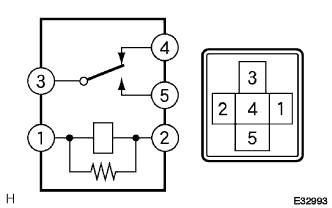
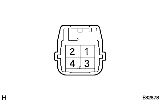

ヒータ&エアコンデイシヨナシステム ブロワモータ回路 |
| 手順1 | アクチュエーターチェック |
アクチュエータチェックモードにし、ブロワモータ(ブロワレベル)の作動を点検する。
| ステップ | 設定温度 | ブロワレベル | 吹出口 | 吸込口 |
|---|---|---|---|---|
| 1 | MAX COLD－20．5 | 0 | FACE | 外気位置 |
| 2 | 21．0－22．5 | 1 | B/L | 外気位置 |
| 3 | 23．0－25．0 | 1 | FOOT1 | 外気位置(除く寒冷地) 内外気二層位置(寒冷地) |
| 4 | 25．5－27．5 | 16 | FOOT2 | 内気位置 |
| 5 | 28．0－30．0 | 16 | F/D | 内気位置 |
| 6 | 30．5－MAX HOT | 31 | DEF | 内気位置 |
|
| ||||
| NG | |
| 手順2 | ヒューズ単体点検（HTR） |
|
| ||||
| OK | |
| 手順3 | ヒータブロワモータ リレーASSY単体点検 |
ヒータブロワモータリレーASSYを取りはずす。
|  |
SST(トヨタエレクトリカルテスター)を使用して、コネクタ各端子間の導通を点検する。
SST(トヨタエレクトリカルテスター)を使用して、コネクタの1端子←→2端子間にバッテリー電圧を加えたとき、3端子←→4端子間および3端子←→5端子間の導通を点検する。
|
| ||||
| OK | |
| 手順4 | ワイヤハーネスまたはコネクター点検（ヒータブロワモータリレーASSY-センタクラスタモジュールスイッチ） |
ヒータブロワモータリレーASSYを取り付ける。
センタクラスタモジュールスイッチのコネクタを切り離す。
IGスイッチをONにする。
 |
SST(トヨタエレクトリカルテスター)を使用して、センタクラスタモジュールスイッチの車両ワイヤハーネス側コネクタA28(HR)←→A13(GND)端子間の電圧を測定する。
|
| ||||
| OK | |
| 手順5 | ワイヤハーネスまたはコネクター点検（ヒータブロワモータリレーASSY-ブロワモータ(ウィズファン)） |
センタクラスタモジュールスイッチのコネクタを接続する。
ブロワモータのコネクタを切り離す。
IGスイッチをONにし、ブロワスイッチをLOにする。
SST(トヨタエレクトリカルテスター)を使用して、ブロワモータ(ウィズファン)の車両ワイヤハーネス側コネクタ1端子←→ボデーアース間の電圧を測定する。
|
| ||||
| OK | |
| 手順6 | ブロワ モータ(ウィズ ファン)単体点検 |
ブロワモータ(ウィズファン)を取りはずす。
 |
コネクタ1端子にバッテリーのプラス、2端子にバッテリーのマイナスを接続したとき、モータが異音なくモータ下部の矢印方向に回転することを確認する。
SST(トヨタエレクトリカルテスター)を使用して、モータ単体(無負荷)状態で回転中の電流値を測定する。
|
| ||||
| OK | |
| 手順7 | ワイヤハーネスまたはコネクター点検（ブロワモータ(ウィズファン)-ブロワレジスタトランジスタASSY） |
ブロワモータのコネクタを接続する。
ブロワレジスタトランジスタASSYコネクタを切り離す。
IGスイッチをONにし、ブロワスイッチをLOにする。
SST(トヨタエレクトリカルテスター)を使用して、ブロワレジスタトランジスタＡＳＳＹの車両ワイヤハーネス側コネクタ4端子←→ボデーアース間の電圧を測定する。
|
| ||||
| OK | |
| 手順8 | ワイヤハーネスまたはコネクター点検（ブロワレジスタトランジスタASSY-ボデーアース） |
SST(トヨタエレクトリカルテスター)を使用して、ブロワレジスタトランジスタASSYの車両ワイヤハーネス側コネクタ1端子←→ボデーアース間の導通を点検する。
|
| ||||
| OK | |
| 手順9 | ブロワ レジスタ トランジスタASSY単体点検 |
ブロワレジスタトランジスタASSYを取りはずす。
コネクタの4端子にバッテリーのプラス、1端子に12V－3．4Wのバルブを介してバッテリーのマイナスを接続する。
|  |
2端子にバッテリーのプラスを接続したとき、バルブが点灯することを確認する。
SST(トヨタエレクトリカルテスター)を使用して、コネクタ3端子←→4端子間の抵抗値を測定する。
|
| ||||
| OK | |
| 手順10 | ワイヤハーネスまたはコネクター点検（センタクラスタモジュールスイッチ-ブロワレジスタトランジスタASSY） |
センタクラスタモジュールスイッチのコネクタを切り離す。
SST(トヨタエレクトリカルテスター)を使用して、車両ワイヤハーネスの各コネクタ端子間の導通およびGNDショート(短絡)を点検する。
| センタクラスタモジュールスイッチ側 端子番号(端子記号) | ブロワレジスタトランジスタASSY側 端子番号 |
|---|---|
| A11(BLW) | 2 |
| A12(VM) | 3 |
|
| ||||
| OK | ||
| ||